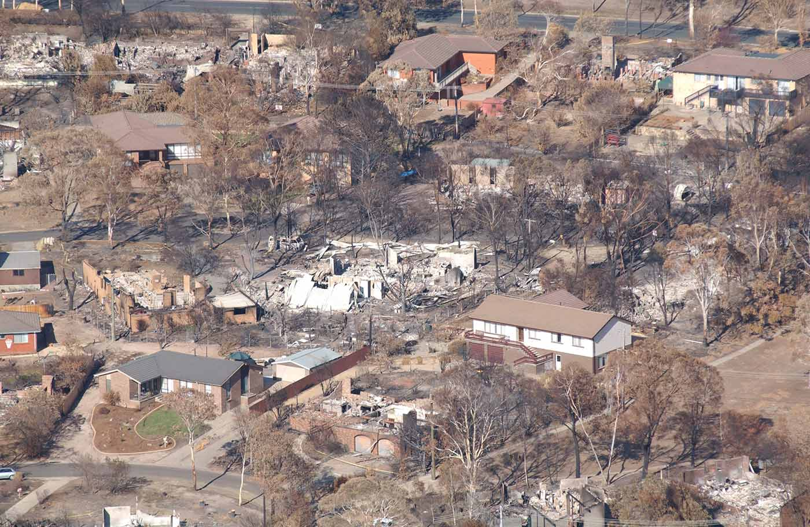
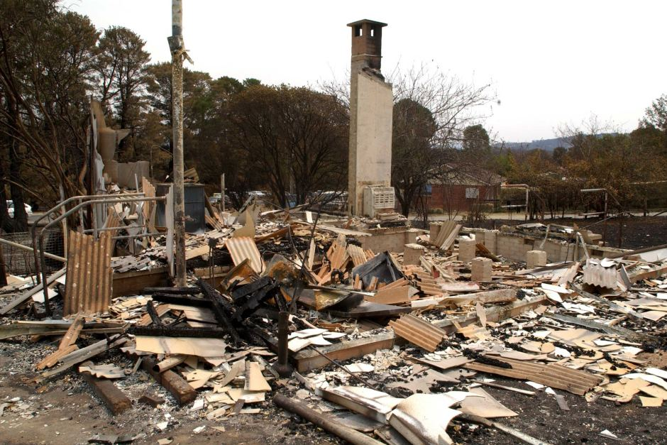
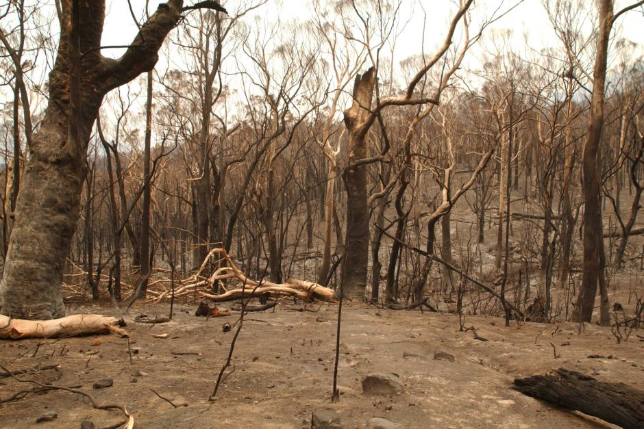
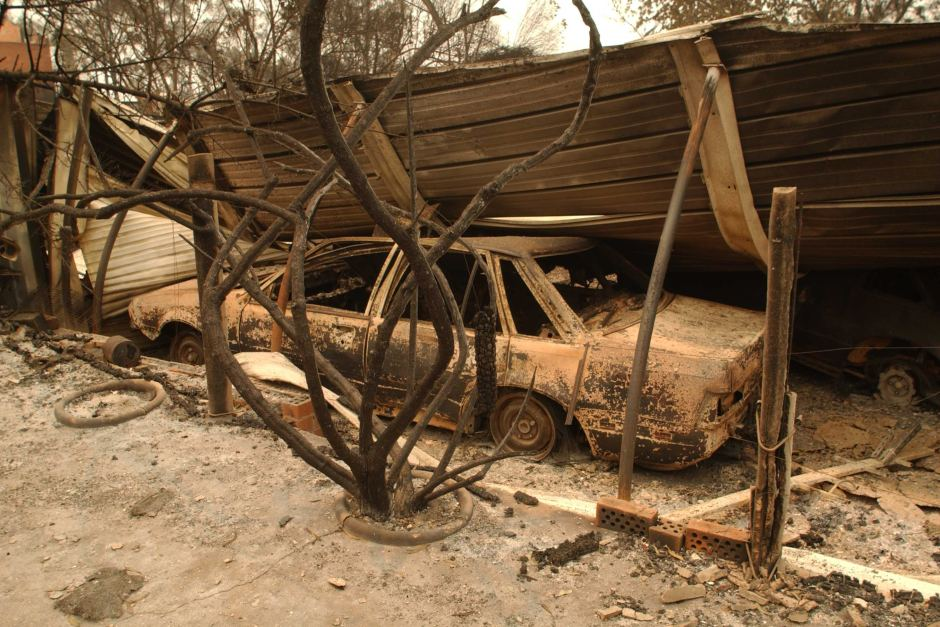

Consequences and Aftermath
The Canberra fires killed four people and injured 435. Almost 70 per cent of the ACT was burned, and about 500 homes and 23 government and commercial buildings were destroyed, including the internationally renowned Mount Stromlo Observatory. The estimated financial cost of the fires was between $600 million and $1 billion.
Bushfires severely harmed the vegetation of the Cotter River Catchment and caused water quality problems in the three dams in the catchment: Corin, Bendora and Cotter Dams. For quite some time after the fires, turbidity in the water due to silt and ash from surrounding burnt-out forests meant Canberra had to rely on Googong Dam on the Queanbeyan River, which was not affected by the fires. Given the drought and existing water shortages, this effectively reduced Canberra's water reserves to around 15% for some time. An upgrade to the Stromlo Water Treatment Plant was subsequently required to allow extra filtration of water to cope with the diminished quality in the future.
Perhaps the most notable cultural and scientific loss caused by the fires was the damage to the scenic and renowned Mount Stromlo Observatory (headquarters of the Research School of Astronomy & Astrophysics of the Australian National University), which is estimated to be the source of a third of Australia's astronomical research.[19] Five historically significant telescopes were destroyed. Instrumentation and engineering workshops, the observatory's library, and the main administration buildings were consumed. The visitors' centre or "Exploratory" housing public exhibits and cafe escaped the fires unscathed, despite being on the edge of a steep gradient, which fires had roared up, and being only metres from the 74-inch (1.88 m) telescope, which was completely destroyed.
The disaster prompted a series of major inquiries, including the ACT Government’s McLeod Inquiry and the ACT Coroner’s Inquiry. Both criticised the authorities for underestimating the scale of the firestorm and made recommendations to improve the ACT’s future fire response.
The ACT coroner’s report found that the ESB failed to aggressively attack the fires in the first few days or to provide adequate warning to the community about the growing fire danger.
The McLeod report highlighted structural inefficiencies in the ACT’s emergency services operations. It led to the Emergencies Act 2004 and the creation of the Emergency Services Agency (ESA), Australia’s first unified emergency agency.
The response to the fires also included a major new scientific program that examined Australian fire thunderstorms. In 2012 researchers documented the Canberra event as the world’s first confirmed case of a ‘fire tornado’. In the words of lead researcher Rick McRae, ‘the study provides crucial information on fire behaviour’.
According to ACT Senior Fire Management Officer Stephen Wilkes, the ‘2002–2003 bushfire season was a pivotal time in the history of how our society approaches bushfire management’ and ‘opened the door to bushfire operational data being made available to the wider scientific community’.
In 2016 an ESA spokesman announced that all of the agreed recommendations from the McLeod and coronial inquiries had been implemented. However, ESA commissioner Dominic Lane warned Canberrans ‘not to be complacent that such a catastrophic event could never happen again and said living in the bush capital “comes with an element of risk”’.
In January 2020 bushfires again burned out of control in the ACT, this time in the Namadgi National Park. Emergency Services Minister Mick Gentleman assured residents that the ACT Government was well prepared for emergencies and had ‘taken significant steps over the last 17 years to ensure that the lessons learned from 2003 have been applied across our emergency services’.
Eighty per cent of Namadgi was burnt and a number of properties to the south of the ACT – in the Bumbalong Valley and near Bredbo and Michelago – were destroyed as a result. However, Canberra’s suburbs – and the township of Tharwa which came under direct threat – were spared.

Destroyed building at the RSPCA in Curtin
National Library of Australia: Loui Seselja

Part of the burnt out area in the Tidbinbilla Nature Reserve
National Library of Australia: Damian McDonald

Car and garage damaged by fire in Duffy
National Library of Australia: Damian McDonald
Looking towards Eucumbene Drive in Duffy, Canberra, January 2003
National Library of Australia nla.obj-130779630
❮
❯

{kind=link}
{kind=link}
{kind=link}
{kind=link}